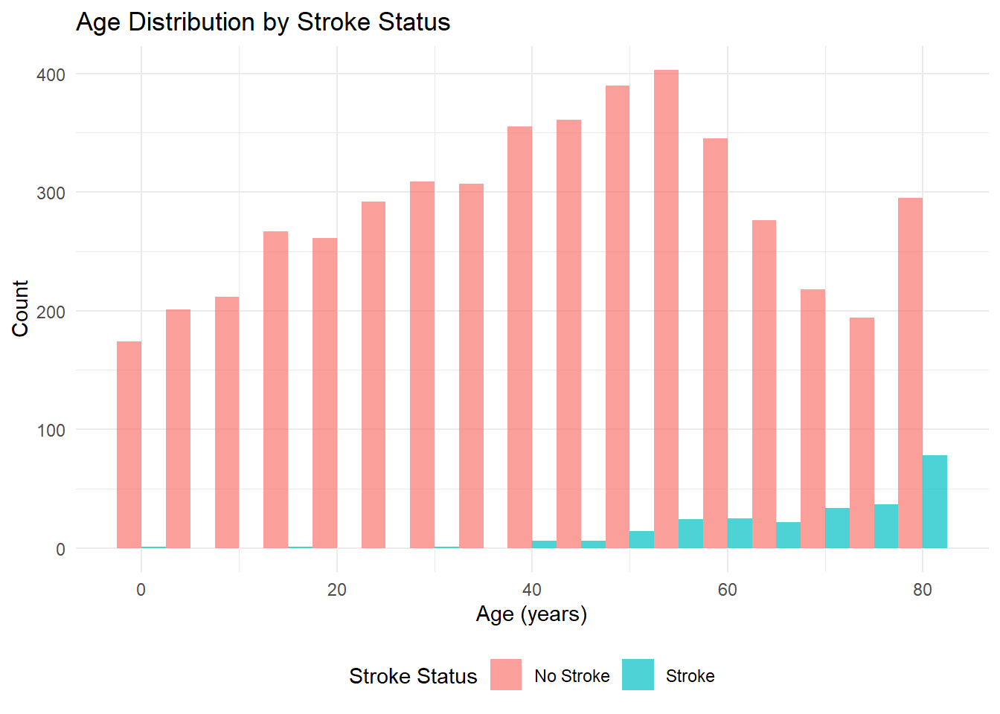

| Variable | Total N = 5109 | No Stroke N = 4,860 |
Stroke N = 249 |
P |
|---|---|---|---|---|
| Age (years) | 45 (25, 61) | 43 (24, 59) | 71 (59, 78) | <0.001 |
| Age Group | <0.001 | |||
| <40 | 2,169 (42%) | 2,161 (44%) | 8 (3.2%) | |
| 40-59 | 1,564 (31%) | 1,504 (31%) | 60 (24%) | |
| 60+ | 1,376 (27%) | 1,195 (25%) | 181 (73%) | |
| Body Mass Index (kg/m²) | 28 (24, 33) | 28 (23, 33) | 30 (26, 34) | <0.001 |
| Missing | 201 | 161 | 40 | |
| Gender | 0.6 | |||
| Male | 2,115 (41%) | 2,007 (41%) | 108 (43%) | |
| Female | 2,994 (59%) | 2,853 (59%) | 141 (57%) | |
| Hypertension | 498 (9.7%) | 432 (8.9%) | 66 (27%) | <0.001 |
| Heart Disease | 276 (5.4%) | 229 (4.7%) | 47 (19%) | <0.001 |
| Ever Married | 3,353 (66%) | 3,133 (64%) | 220 (88%) | <0.001 |
| Work Type | ||||
| Private | 2,924 (57%) | 2,775 (57%) | 149 (60%) | |
| Self-employed | 819 (16%) | 754 (16%) | 65 (26%) | |
| Government Job | 657 (13%) | 624 (13%) | 33 (13%) | |
| Children | 687 (13%) | 685 (14%) | 2 (0.8%) | |
| Never Worked | 22 (0.4%) | 22 (0.5%) | 0 (0%) | |
| Residence Type | 0.3 | |||
| Rural | 2,513 (49%) | 2,399 (49%) | 114 (46%) | |
| Urban | 2,596 (51%) | 2,461 (51%) | 135 (54%) | |
| Average Glucose Level (mg/dL) | 92 (77, 114) | 91 (77, 113) | 105 (80, 197) | <0.001 |
| Glucose Category | ||||
| Normal | 3,131 (61%) | 3,019 (62%) | 112 (45%) | |
| Prediabetic | 998 (20%) | 961 (20%) | 37 (15%) | |
| Diabetic | 980 (19%) | 880 (18%) | 100 (40%) | |
| BMI Category | ||||
| Underweight | 337 (6.9%) | 336 (7.2%) | 1 (0.5%) | |
| Normal | 1,242 (25%) | 1,207 (26%) | 35 (17%) | |
| Overweight | 1,409 (29%) | 1,334 (28%) | 75 (36%) | |
| Obese | 1,920 (39%) | 1,822 (39%) | 98 (47%) | |
| Missing | 201 | 161 | 40 | |
| Smoking Status | <0.001 | |||
| Formerly Smoked | 884 (17%) | 814 (17%) | 70 (28%) | |
| Never Smoked | 1,892 (37%) | 1,802 (37%) | 90 (36%) | |
| Currently Smokes | 789 (15%) | 747 (15%) | 42 (17%) | |
| Unknown | 1,544 (30%) | 1,497 (31%) | 47 (19%) |
Final Project 590R
Final Project 590R R Boot Camp
This study has 5109 participants and among those 108 (43%) males had stroke while 141 (57%) females had experienced a stroke.
The median age for participants with stroke was 71 (59, 78) and for participants without stroke was 43 (24, 59). Other charateristics and demographics of study participants can be seen in Table 1.
| Characteristic | N | OR | 95% CI | p-value |
|---|---|---|---|---|
| Age (years) | 5,109 | 1.08 | 1.07, 1.09 | <0.001 |
| Gender | 5,109 | |||
| Male | — | — | ||
| Female | 0.92 | 0.71, 1.19 | 0.5 | |
| Hypertension | 5,109 | |||
| No | — | — | ||
| Yes | 3.70 | 2.73, 4.96 | <0.001 | |
| Heart Disease | 5,109 | |||
| No | — | — | ||
| Yes | 4.71 | 3.30, 6.59 | <0.001 | |
| Ever Married | 5,109 | |||
| No | — | — | ||
| Yes | 4.18 | 2.88, 6.31 | <0.001 | |
| Residence Type | 5,109 | |||
| Urban | — | — | ||
| Rural | 0.87 | 0.67, 1.12 | 0.3 | |
| Average Glucose Level (mg/dL) | 5,109 | 1.01 | 1.01, 1.01 | <0.001 |
| Body Mass Index (kg/m²) | 4,908 | 1.02 | 1.01, 1.04 | 0.003 |
| Smoking Status | 5,109 | |||
| Formerly Smoked | — | — | ||
| Never Smoked | 0.58 | 0.42, 0.80 | <0.001 | |
| Currently Smokes | 0.65 | 0.44, 0.97 | 0.035 | |
| Unknown | 0.37 | 0.25, 0.53 | <0.001 | |
| Abbreviations: CI = Confidence Interval, OR = Odds Ratio | ||||
After linear regression analysis, it was discovered that people with hypertension had 3.70 (95% CI 2.73, 4.96; p<0.001) times the odds of having a stroke compared to who did not have hypertension. The Table 2 also shows other variables and their odds of having stroke.

We can se in Figure 1 that higher age had more number of strokes then lesser age.
Data Description
The analytic file contains r nrow(stroke) observations and r ncol(stroke) variables. Continuous variables (e.g., age, bmi, avg_glucose_level) are summarized with means/SD and medians/IQR; categorical variables (e.g., gender, hypertension, smoking_status) are tabulated as counts and percentages. An overall mean age of 45 years is reported in Table 1.